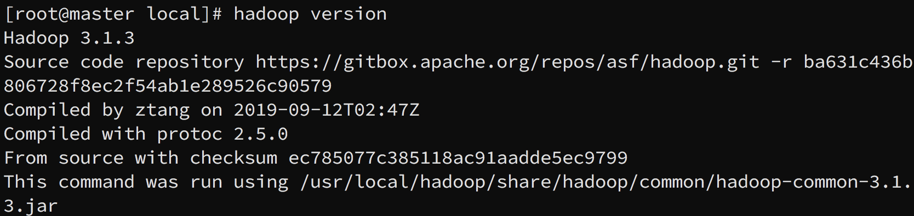
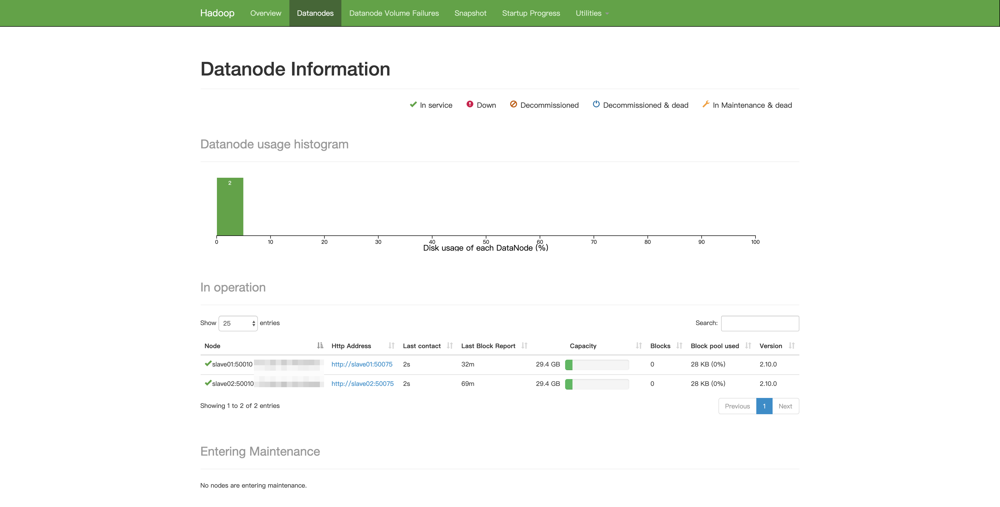
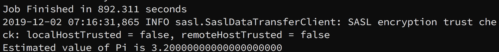

学习在阿里云上搭建 Hadoop + HBase + Hive + Spark 集群的笔记。搭建过程中遇到了很多问题，在查阅资料的过程中也走了很多弯路。在这里将搭建步骤和问题一一记录，既方便日后复习，也为其它小伙伴提供一些帮助。
本篇是笔记的第一部分，从准备工作开始，到 Hadoop 集群搭建完成为止。
准备工作
购买阿里云服务器
在阿里云上配置集群，要做的第一件事情自然是购买阿里云服务器。阿里云上产品种类繁多，初学者（比如我）很容易看花了眼。不过很快我就在新手套餐里找到了合适的服务器。我使用了三台单核 1G 内存的服务器，预装 CentOS 7，并计划以其中一台作为 master 节点，另两台作为 slave 节点搭建我的 hadoop 集群。购买服务器时要注意你所在的位置。我在美国东部留学，选择了弗吉尼亚节点。三台机器（包括免费试用的一台）一个月总共 11 美元，并不昂贵。
购买服务器的过程中会提示你新建密码或者新建密钥对。如果你不清楚这些是什么，可以暂时跳过，因为这些都可以在稍后进行设置。
购买完成后可以先在控制台修改实例名称为 master/slave01/slave02，这样后面就不需要再修改主机名了。
在后来的实践中发现服务器性能太弱，几乎不能完成任何有实际价值的任务。所以后来升级到了三台双核 4G 服务器，加了 45 美元
ssh 免密码登录
本地到服务器
我们可以从本地连接到服务器进行远程管理。为了避免繁琐的密码输入，我们需要对 ssh 进行一些配置。
即使你打算使用密码进行远程连接，我也建议你耐心地看完这一段。因为本段中涉及到的方法，在后文服务器之间的免密互联中会再次用到
首先要为服务器绑定 ssh 密钥对。在云服务器管理控制台页面左侧菜单中有网络与安全 -> 密钥对子页面，你可以在这里新建并绑定密钥对。当然，你也可以选择在购买服务器的过程中新建并绑定密钥对。包括密钥对绑定在内的很多设定都是可以自由修改的，所以你可以随意选择使用何种方式。安全起见，这一步可以将登陆密码一并进行设置或修改（同样是在实例页面中）。这里你会遇到两种密码，分别是实例密码和远程连接密码。前者是这台实例上 root 用户的密码，而后者是在阿里云提供的网页上，远程连接管理实例时使用的密码，需要稍作区分。
新建密钥对后有且仅有一次机会下载私钥，要注意及时妥善地下载保存
接下来我们需要在本地进行一些操作。我是在 Mac 环境下进行开发，接下来所有的描述都以 Mac 环境作为背景。如果你是 Windows 用户，可以参考阿里云的官方文档。
官方文档中提供了两种连接方式。第一种通过ssh -i命令访问服务器，第二种则通过修改 ssh 配置信息进行访问。在开始配置前，请确保 .pem 私钥文件已被妥善下载到本地，并被保存至合适的的路径。
第一种方法：
首先通过chmod命令修改 .pem 私钥文件的权限。
1 | chmod 400 [.pem 文件路径] |
上面的命令将私钥文件设定为只对文件拥有者可读，可以避免私钥被意外修改。接下来在终端中输入下方命令就可以远程访问我们的服务器了。实例的公网 IP 地址可以很轻松地在实例页面中查到。
1 | ssh -i [.pem 文件路径] root@[实例公网 IP 地址] |
第一种方法并不方便，但是我们有办法利用它。如果你的终端能够记忆历史命令，那么只要输入
ssh -i再按方向键就可以了。如果没有安装这样的功能，也可以修改终端配置文件，为上面的命令设置一个别名
第二种方法：
使用vi打开/etc/ssh文件夹下的ssh_config文件。这个文件记录了 ssh 客户端的各种配置。将下面的代码添加到ssh_config文件的末尾：
1 | Host master # 实例的名字，由你自行定义，建议使用 master, slave01, slave02 方便记忆 |
ssh_config文件中的配置是以Host作为标记区分段落的。你可以根据需要添加多个不同的以Host为开头的段落，来为不同的服务器进行配置。保存文件并重启 ssh 后，通过下面的命令就可以连接到实例了：
1 | ssh ecs // ecs 是上面配置中实例的名称，注意对应 |
Mac 对于
ssh_config文件有权限保护。我暂时还没研究绕开权限的方法，留待以后补充
服务器到服务器
上面的步骤完成后，我们就可以方便地从本地连接到 master 节点进行管理了。但是仅仅这样是完全不够的。在分布式计算的过程中，我们的服务器间会产生大量的数据通信。如果每次通信都要输入密码，那将会是非常可怕的事情。为此我们还要配置服务器之间的 ssh 免密。
连接到 master 服务器，创建一个新目录用于存放各种软件。我创建的目录是/root/software，而你可以选择其它喜爱的目录。回到本地，执行下面的命令，将 .pem 文件上传到 master 服务器：
1 | scp [.pem 文件地址] root@[实例的公网 IP]:/root/software/ // 注意对应到你自己的目录 |
连接到服务器，参考本地连接服务器方法二对ssh_config进行修改。在这里你需要将全部三台服务器的信息加入ssh_config文件中（即输入三段以Host为开头的配置）。一切完成后，输入service sshd restart命令重启 ssh 服务。接着使用下面的命令测试连接：
1 | ssh master // 你配置的 Host 名称，将三个服务器的名称都试验一遍吧！ |
第一次连接可能会有提示信息，根据提示输入yes即可。至此你应该已经完成了一台服务器的免密设置了。再接再厉，完成其它两台服务器的配置吧！
我在网上找到的其它资料都是在服务器上新生成一个密钥对，然后分配到其它服务器中。但是既然阿里云已经为我们绑定了密钥对，何不直接利用它呢？上面的方法经过我个人测试是有效的
配置 hosts 文件
在每一个节点上打开/etc/hosts，将三台节点的内网 IP 信息添加到末尾：
1 | 172.**.***.*** master master |
安装配置 Java SDK
首先我们需要将 JDK 下载到服务器上。实现的办法有很多，这里我采用的是先下载到本地，再上传到服务器的方法。到Orcale 网站下载 Linux x64 版本 JDK 到本地。接着输入下方的命令就可以把本地的 JDK 上传到服务器上了：
1 | scp [本地 JDK 地址] root@[实例的公网 IP]:/root/software/ // 注意将要存放 JDK 的目录修改为你的目录 |
这一步可能需要输入 root 用户的密码。提交命令，稍安勿躁，很快你就能在服务器上看到 JDK 了。
如果你已经完成了免密通信的配置，那么这里的公网 IP 可以替换成对应的 Host 名称
接着新建一个目录作为 JDK 的安装路径：
1 | mkdir /usr/java |
回到 software 目录，执行下方命令解压缩包：
1 | tar -xzvf jdk-8u231-linux-x64.tar.gz // 文件名应该以你下载的为准 |
现在执行ls命令，可以发现 software 目录下多出了一个 jdk 开头的文件夹。用下面的命令将这个文件夹移动到刚才创建的/usr/java/目录中:
1 | mv jdk1.8.0_231/ /usr/java |
接下来配置环境变量。使用vi /root/.bash_profile打开配置文件，将下方的代码加入文件最后：
1 | export JAVA_HOME=/usr/java/jdk1.8.0_231 # 注意替换成你自己的 jdk 文件夹 |
保存退出。别忘记执行source ~/.bash_profile重新加载配置文件。这一切完成后就可以执行下面的代码来检验成果了：
1 | java -version |
如果你的终端中出现了 java 版本信息，那么祝贺你，安装成功了！不过，现在就放松精神还为时过早。你还需要为其它两台服务器安装 java。收拾耐心，一鼓作气地将工作全部完成吧！
至此基本的准备工作已经完成了，我们可以开始搭建我们的集群了！
Hadoop
安装 Hadoop
首先到Hadoop 官网下载安装包，并上传到 master 节点。我选择的是 3.1.3 版本：
最初我选择的是 2.10.0 版本，但这个版本似乎和 hbase 2.2.2 版本有冲突，因此后来重装了 3.1.3 版本
1 | scp [本地安装包路径] root@[master 节点公网 IP]:/usr/local |
解压，顺便重新赋予一个便于输入的名字：
1 | tar -zxvf hadoop-3.1.3 |
现在适合配置环境变量！打开/root/.bash_profile，在末尾添加如下内容：
1 | export HADOOP_HOME=/usr/local/hadoop |
别忘记执行source /root/.bash_profile重新加载配置文件。现在可以执行下面的命令来检查 Hadoop 是否成功安装。成功安装的话就会出现 Hadoop 版本信息：
1 | hadoop version |

上面的步骤暂时只需要在 master 节点执行就可以了。slave 节点上的配置，可以等到 master 节点配置完成后再进行不迟。
Hadoop 集群配置和启动
详细的配置说明请参考Hadoop 官方文档。Hadoop 配置文件目录为/usr/local/hadoop/etc/hadoop（注意区分你自己的安装目录）。我们首先进入配置文件目录。
core-site.xml
打开core-site.xml，将 configuration 标签下的内容进行如下修改：
1 | <configuration> |
hdfs-site.xml
打开hdfs-site.xml，将 configuration 标签下的内容进行如下修改：
1 | <configuration> |
mapred-site.xml
倘若你使用的是 Hadoop 2，首先先通过下面的命令重命名文件：
1 | mv mapred-site.xml.template mapred-site.xml |
打开，进行如下修改：
1 | <configuration> |
yarn-site.xml
打开yarn-site.xml进行如下修改：
1 | <configuration> |
hadoop-env.sh
打开hadoop-env.sh，在文件开始处添加以下内容：
1 | export JAVA_HOME=/usr/java/jdk1.8.0_231 |
配置 slaves
打开workers，删掉默认的 localhost，添加：
1 | slave01 |
Hadoop 2 中对应的文件名是 slaves
复制 hadoop 文件夹到各个节点
现在直接将 master 节点上的 hadoop 文件夹复制到各个节点，就可以省下安装和配置的步骤：
1 | scp -r /usr/local/hadoop slave01:/usr/local |
启动集群
首先在 master 节点上启动 hadoop。执行以下命令格式化各节点信息：
1 | hdfs datanode -format |
接着启动 hadoop 环境：
1 | /usr/local/hadoop/sbin/start-dfs.sh |
遇到问题不要慌，仔细看 ERROR 信息和日志，百度一下，你就知道
Hadoop 集群检查
参考资料：Kavim 的博文
接下来项目中几乎所有内容都倚赖于 Hadoop，因此在这一步进行充分的检查是合理而有必要的。
集群启动
首先检查集群是否正常启动。
查看进程
启动 Hadoop 后，运行 jps 命令，查看当前的 java 进程：
1 | jps |
如果能在 master 节点看到 NameNode，SecondaryNameNode 和 ResourceManager 的进程，并在 slave 节点看到 DataNode 和 NodeManager 进程，则说明启动成功。
也可以使用
hadoop dfsadmin -report命令查看详细的运行状态
Web 界面
Hadoop 提供了非常便利的 Web 界面方便我们监控集群运作的状态。不同组件 Web 界面对应的端口号如下：
| Daemon | Port |
|---|---|
| NameNode | 9870 |
| ResourceManager | 8088 |
| MapReduce JobHistory Server | 19888 |
可以在本地的浏览器内，通过访问http://master 节点的 IP 地址:port查看对应组件的状态。需要注意的是，访问 Web 界面需要阿里云开放对应的端口，如果没有开放，则需要在阿里云控制台的安全组设置内进行设置。

这张截图是 Hadoop 2 下的，和 Hadoop 3 大同小异
Hadoop 2 中，NameNode 默认端口为 50070，而实际应用中开放 50070 端口会带来严重的安全问题。详情请参考：Hadoop 黑客赎金事件解读及防范
集群运行
接着我们通过一些实际任务检查集群是否正常运行。最好的检查办法莫过于实际运行任务。这里测试一下 Hadoop 自带的 pi 任务。进入/usr/lcoal/hadoop/bin，执行：
1 | hadoop jar /usr/local/hadoop/share/hadoop/mapreduce/hadoop-mapreduce-examples-3.1.3.jar pi 10 10 |
似乎由于内存比较小，经历了数次失败才最终成功。如果你的服务器和我的一样羸弱，不妨尝试小一点的参数。测试结果如下：

安装配置过程中遇到的问题
每个人使用的系统环境和安装版本都有所区别，直接照搬网络上的资料可能会遇到各种问题。在这里是我个人安装过程中遇到的一些问题以及解决的方法。解决方案已经融合进了前文的安装配置之中，在此单独列出，以便日后查阅。
1. 无法连接到 Web 界面
原因是阿里云没有开放对应端口。到阿里云控制台内开放端口即可。不排除某些情况下是由于 Hadoop 集群没有正常启动，使用时要注意筛查。
2. Hadoop 集群启动，但是 master 和 slaves 之间的通信不正常
原因是没有配置 host 文件。将内网 IP 信息正确配置后问题解决。
3. 提示HDFS_NAMENODE_USER不为root
在配置文件中将其设置为root即可。出现这个问题后根据网络资料顺便设置了其它几个变量。这个问题在 Hadoop 2 中没有遇到。
4. master 节点进程正常，slave 节点没有 DataNode
重启之前删除各个节点的 logs 和 tmp 文件夹，然后再 format。不过我不清楚这个方法究竟是解决了问题，还是误打误撞。
5. 运行 pi 测试程序失败，提示虚拟内存不足
在yarn-site.xml中加入如下配置：
1 | <property> |
Hadoop 中虚拟内存的大小是实际内存的一定倍数，其默认值为 2.1 倍。这里我们将它增加到 5 倍就可以解决问题。
6. 运行 pi 测试程序失败，reducer 拉取数据失败
错误信息：Error: org.apache.hadoop.mapreduce.task.reduce.Shuffle$ShuffleError: error in shuffle in fetcher#4。问题的原因是 fetcher 拉取并保存到内存中的数据过大，导致内存溢出。具体解决方案可以参考安金龙的博文。我的测试在经历了数次重试后完成了任务，所以我并没有进行相应的修改。
7. 运行 pi 测试失败，需要设置HADOOP_MAPRED_HOME
Typora 崩溃丢失数据了，导致我现在也不清楚当时错误提示信息具体是什么。不过还记得解决方案以及，在查阅资料后得知，Hadoop 3 中不同 service 变量不继承。于是即便HADOOP_HOME和HADOOP_MAPRED_HOME两者相等，还是要分别进行配置。在mapred-site.xml中增加下面的配置即可：
1 | <property> |